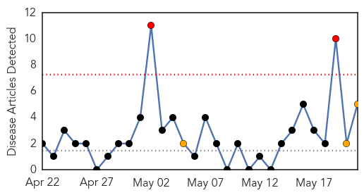
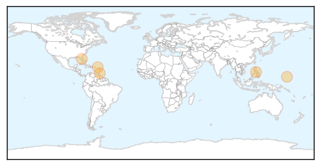

30 Day Trends
Web: 2 alerts, 3 warnings
Twitter: 0 alerts, 0 warnings
Top Articles:
- 0.998
- Mosquito-Borne Breaking Bone Disease Spreads In Haiti
- 0.954
- Chikungunya fever confirmed in Palm Beach County man
- 0.953
- New Facility to Detect and Respond to Outbreaks of Infectious Disease
- 0.950
- WINN FM 98.9 - Twenty confirmed cases of Chikungunya in St. Kitts
- 0.915
- Mosquito-borne Chikunguna cases reported in Miami — MercoPress
Top Tweets:
-
No tweets found for May 21, 2014
Web/News Articles
Tweets

Article Locations
Article Confidences